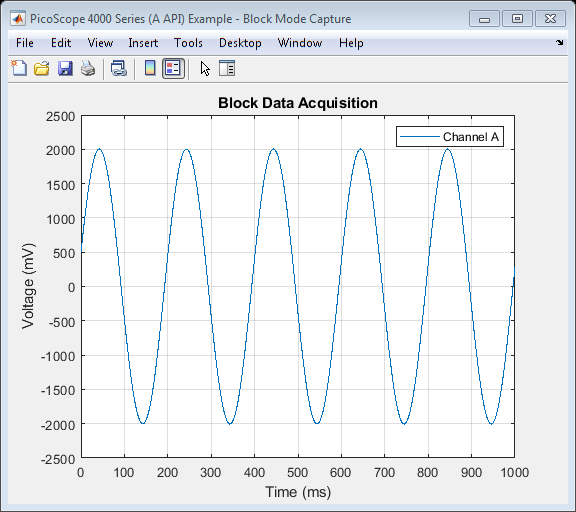

PicoScope 4000 Series (A API) Instrument Driver Oscilloscope Block Data Capture Example
This is an example of an instrument control session using a device object. The instrument control session comprises all the steps you are likely to take when communicating with your instrument.
These steps are:
- Create a device object
- Connect to the instrument
- Configure properties
- Invoke functions
- Disconnect from the instrument
To run the instrument control session, type the name of the file, PS4000A_ID_Block_Example, at the MATLAB command prompt.
The file, PS4000A_ID_BLOCK_EXAMPLE.M must be on your MATLAB PATH. For additional information on setting your MATLAB PATH, type 'help addpath' at the MATLAB command prompt.
Example: PS4000A_ID_Block_Example;
Description: Demonstrates how to call Instrument Driver functions in order to capture a block of data from a PicoScope 4000 Series oscilloscope using the underlying (lib)ps4000a shared library API functions.
Copyright: © 2014-2019 Pico Technology Limited. See LICENSE file for terms.
Contents
Suggested input test signal
This example was published using the following test signal:
- Channel A: 4 Vpp, 5 Hz sine wave
Clear command window and close any figures
clc;
close all;
Load configuration information
PS4000aConfig;
Device connection
% Check if an Instrument session using the device object 'ps4000aDeviceObj' % is still open, and if so, disconnect if the User chooses 'Yes' when prompted. if (exist('ps4000aDeviceObj', 'var') && ps4000aDeviceObj.isvalid && strcmp(ps4000aDeviceObj.status, 'open')) openDevice = questionDialog(['Device object ps4000aDeviceObj has an open connection. ' ... 'Do you wish to close the connection and continue?'], ... 'Device Object Connection Open'); if (openDevice == PicoConstants.TRUE) % Close connection to device disconnect(ps4000aDeviceObj); delete(ps4000aDeviceObj); else % Exit script if User return; end end % Create a device object. % The serial number can be specified as a second input parameter. ps4000aDeviceObj = icdevice('picotech_ps4000a_generic.mdd', ''); % Connect device object to hardware. connect(ps4000aDeviceObj);
PicoScope 4000 Series (A API) MATLAB Instrument Driver
Copyright © 2014-2019 Pico Technology Ltd. All rights reserved.
Instrument Device Object Using Driver : picotech_ps4000a_generic.mdd
Instrument Information
Type: Oscilloscope
Manufacturer: Pico Technology Ltd.
Model: PicoScope 4000 Series (A API)
Driver Information
DriverType: MATLAB generic
DriverName: picotech_ps4000a_generic.mdd
DriverVersion: 1.2.16.4
Communication State
Status: closed
Number of units found: 1
Serial number(s): ZZ990/003
Opening PicoScope 4000 Series (A API) device...
Instrument Device Object Using Driver : picotech_ps4000a_generic.mdd
Instrument Information
Type: Oscilloscope
Manufacturer: Pico Technology Ltd.
Model: PicoScope 4000 Series (A API)
Driver Information
DriverType: MATLAB generic
DriverName: picotech_ps4000a_generic.mdd
DriverVersion: 1.2.16.4
Communication State
Status: open
Setting Device Parameters...
Default Channel Setup:-
-----------------------
Channel A:-
Enabled: True
Coupling: DC
Range: 5V
Analog Offset: 0.0V
Channel B:-
Enabled: True
Coupling: DC
Range: 5V
Analog Offset: 0.0V
Channel C:-
Enabled: True
Coupling: DC
Range: 5V
Analog Offset: 0.0V
Channel D:-
Enabled: True
Coupling: DC
Range: 5V
Analog Offset: 0.0V
Channel E:-
Enabled: True
Coupling: DC
Range: 5V
Analog Offset: 0.0V
Channel F:-
Enabled: True
Coupling: DC
Range: 5V
Analog Offset: 0.0V
Channel G:-
Enabled: True
Coupling: DC
Range: 5V
Analog Offset: 0.0V
Channel H:-
Enabled: True
Coupling: DC
Range: 5V
Analog Offset: 0.0V
Turning off trigger...
Default Block mode parameters:-
Timebase index : 79
Time Interval: 1000.0 ns
Number of pre-trigger samples: 0
Number of post-trigger samples: 1000000
Total number of samples: 1000000
Default Streaming mode parameters:-
Streaming interval: 1.00e-06 s
Streaming auto stop: 1
Default Signal generator parameters:-
Start frequency: 1000 Hz
Stop frequency: 1000 Hz
Offset voltage: 0 mV
Peak to Peak voltage: 2000 mV
Initialization complete.
Connected to PicoScope 4000 Series (A API) device:-
Instrument Model: 4824
Batch/Serial Number: ZZ990/003
Analog Channels: 8
Bandwidth: 20 MHz
Buffer memory: 256 MS
Maximum sampling rate: 80 MS/s
Signal Generator Type: Arbitrary Waveform Generator
Set channels
Default driver settings applied to channels are listed below - use ps4000aSetChannel() to turn channels on or off and set voltage ranges, coupling, as well as analog offset.
In this example, data is only collected on Channel A so default settings are used and other input channels are switched off.
If using the PicoScope 4444, select the appropriate range value for the probe connected to an input channel using the enumeration values available from the ps4000aEnuminfo.enPicoConnectProbeRange substructure.
% Channels : 1 - 7 (ps4000aEnuminfo.enPS4000AChannel.PS4000A_CHANNEL_B - PS4000A_CHANNEL_H) % Enabled : 0 % Type : 1 (ps4000aEnuminfo.enPS4000ACoupling.PS4000A_DC) % Range : 8 (ps4000aEnuminfo.enPS4000ARange.PS4000A_5V) % Analogue Offset: 0.0 % Execute device object function(s). [status.setChB] = invoke(ps4000aDeviceObj, 'ps4000aSetChannel', 1, 0, 1, 8, 0.0); if (ps4000aDeviceObj.channelCount == PicoConstants.QUAD_SCOPE || ps4000aDeviceObj.channelCount == PicoConstants.OCTO_SCOPE) [status.setChC] = invoke(ps4000aDeviceObj, 'ps4000aSetChannel', 2, 0, 1, 8, 0.0); [status.setChD] = invoke(ps4000aDeviceObj, 'ps4000aSetChannel', 3, 0, 1, 8, 0.0); end if (ps4000aDeviceObj.channelCount == PicoConstants.OCTO_SCOPE) [status.setChE] = invoke(ps4000aDeviceObj, 'ps4000aSetChannel', 4, 0, 1, 8, 0.0); [status.setChF] = invoke(ps4000aDeviceObj, 'ps4000aSetChannel', 5, 0, 1, 8, 0.0); [status.setChG] = invoke(ps4000aDeviceObj, 'ps4000aSetChannel', 6, 0, 1, 8, 0.0); [status.setChH] = invoke(ps4000aDeviceObj, 'ps4000aSetChannel', 7, 0, 1, 8, 0.0); end
Verify timebase index and maximum number of samples
Driver default timebase index used - use ps4000aGetTimebase2() to query the driver as to suitability of using a particular timebase index and the maximum number of samples available in the segment selected (the buffer memory has not been segmented in this example) then set the 'timebase' property if required.
To use the fastest sampling interval possible, set one analog channel and turn off all other channels.
Use a while loop to query the function until the status indicates that a valid timebase index has been selected. In this example, the timebase index of 79 is valid.
% Initial call to ps4000aGetTimebase2 with parameters: % timebase : 79 % segment index : 0 status.getTimebase2 = PicoStatus.PICO_INVALID_TIMEBASE; timebaseIndex = get(ps4000aDeviceObj, 'timebase'); while (status.getTimebase2 == PicoStatus.PICO_INVALID_TIMEBASE) [status.getTimebase2, timeIntervalNanoSeconds, maxSamples] = invoke(ps4000aDeviceObj, 'ps4000aGetTimebase2', timebaseIndex, 0); if (status.getTimebase2 == PicoStatus.PICO_OK) break; else timebaseIndex = timebaseIndex + 1; end end fprintf('Timebase index: %d\n', timebaseIndex); set(ps4000aDeviceObj, 'timebase', timebaseIndex);
Timebase index: 79
Set simple trigger
Set a trigger on Channel A, with an auto timeout - the default value for delay is used.
% Trigger properties and functions are located in the Instrument % Driver's Trigger group. triggerGroupObj = get(ps4000aDeviceObj, 'Trigger'); triggerGroupObj = triggerGroupObj(1); % Set the |autoTriggerMs| property in order to automatically trigger the % oscilloscope after 1 second if a trigger event has not occurred. Set to 0 % to wait indefinitely for a trigger event. set(triggerGroupObj, 'autoTriggerMs', 1000); % Channel : 0 (ps4000aEnuminfo.enPS4000AChannel.PS4000A_CHANNEL_A) % Threshold : 500 (mV) % Direction : 2 (ps4000aEnuminfo.enPS4000AThresholdDirection.PS4000A_RISING) [status.setSimpleTrigger] = invoke(triggerGroupObj, 'setSimpleTrigger', 0, 500, 2);
Set block parameters and capture data
Capture a block of data and retrieve data values for Channel A.
% Block data acquisition properties and functions are located in the % Instrument Driver's Block group. blockGroupObj = get(ps4000aDeviceObj, 'Block'); blockGroupObj = blockGroupObj(1); % Set pre-trigger and post-trigger samples as required - the total of this should % not exceed the value of maxSamples returned from the call to ps6000GetTimebase2. % The default of 0 pre-trigger and 1 million post-trigger samples is used % in this example. % set(ps4000aDeviceObj, 'numPreTriggerSamples', 0); % set(ps4000aDeviceObj, 'numPostTriggerSamples', 2e6);
This example uses the runBlock() function in order to collect a block of data - if other code needs to be executed while waiting for the device to indicate that it is ready, use the ps4000aRunBlock() function and poll the ps4000aIsReady() function.
% Capture a block of data: % % segment index: 0 (The buffer memory is not segmented in this example) [status.runBlock] = invoke(blockGroupObj, 'runBlock', 0); % Retrieve data values: % % start index : 0 % segment index : 0 % downsampling ratio: 1 % downsampling mode : 0 (ps4000aEnuminfo.enPS4000ARatioMode.PS4000A_RATIO_MODE_NONE) % Provide additional output arguments for the remaining channels e.g. chB % for Channel B [numSamples, overflow, chA] = invoke(blockGroupObj, 'getBlockData', 0, 0, 1, 0); % Stop the device [status.stop] = invoke(ps4000aDeviceObj, 'ps4000aStop');
runBlock:- Collecting block of data: Timebase: 79 Pre-trigger samples: 0 Post-trigger samples: 1000000 runBlock: Waiting for device to become ready... runBlock: Device ready. getBlockData: Setting up data buffers... getBlockData: Retrieving data... getBlockData: Assigning data to array and converting to millivolts. getBlockData: Data succesfully retrieved.
Process data
Plot data values returned from the device.
figure1 = figure('Name','PicoScope 4000 Series (A API) Example - Block Mode Capture', ... 'NumberTitle', 'off'); % Calculate sampling interval (nanoseconds) and convert to milliseconds % Use the timeIntervalNanoSeconds output from the ps4000aGetTimebase2() % function or calculate it using the main Programmer's Guide. timeNs = double(timeIntervalNanoSeconds) * double(0:numSamples - 1); timeMs = timeNs / 1e6; % Channel A plot(timeMs, chA); title('Block Data Acquisition'); xlabel('Time (ms)'); % Obtain the channel range and units [chARange, chAUnits] = invoke(ps4000aDeviceObj, 'getChannelInputRangeAndUnits', ps4000aEnuminfo.enPS4000AChannel.PS4000A_CHANNEL_A); ylabel(getVerticalAxisLabel(chAUnits)); grid on; legend('Channel A');
Disconnect device
Disconnect device object from hardware.
disconnect(ps4000aDeviceObj); delete(ps4000aDeviceObj);
Connection to PicoScope 4824 with serial number ZZ990/003 closed successfully. Libraries unloaded successfully.